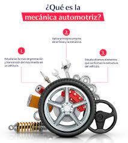

Se trata de un rubro que permite trabajar de manera independiente, por lo muchos profesionales optan por abrir su propio taller una vez han ganado experiencia suficiente.
y que no todos los talleres ni centros de atención de vehículos requieren que los mecánicos posean títulos de grado, para muchos basta con un técnico en el área

Estilo de dibujo a Lápiz
Historia de la mecanica
Desde 1769 hemos tenido a los autos rodando por las carreteras alrededor del mundo. Así como lo leen, el primer vehículo tenía tres ruedas de madera, llantas de hierro y era propulsado por vapor. El creador de los mismos fue Nicholas-Joseph Cugnot.
Con el paso de los años, se fueron mejorando los modelos y su efectividad. En este artículo podrás ver su evolución al día de hoy junto con características particulares de distintos vehículos.
Dibujos y pinturas de la cueva de Altamira, en España.
Hace casi 130 años, el primer automóvil de motor de combustión interna fue creado por la ahora reconocida firma alemana, Mercedes-Benz. La velocidad máxima a la que podían alcanzar estos autos era de 20 kilómetros por hora, gastaba grandes cantidades de gasolina y se adquiría en farmacias cantidades pequeñas.
En la Edad Media, se utilizó profusamente el dibujo, generalmente coloreado, para representar sobre pergaminos temas religiosos a modo de explicación o alegoría de las historias escritas, privando así lo simbólico sobre lo realista, incluso las proporciones y cánones de la época. La cultura islámica también contribuyó con preciosos dibujos que solían acompañar textos de anatomía, .astronomía. o astrología. En el Renacimiento, el dibujo eclosiona y logra alcanzar sublimes logros. Por primera vez se estudia el método de reflejar la realidad con la mayor fidelidad posible, con arreglo a normas matemáticas y geométricas impecables: con Filippo Brunelleschi surge la perspectiva cónica. El dibujo, de la mano de los grandes artistas renacentistas cobra autonomía, adquiriendo valor propio en autorretratos, planos arquitectónicos y variados temas realistas –como los de Leonardo da Vinci–, además servir como estudio previo imprescindible de otras artes, como la pintura, escultura o arquitectura.
Mecanica antigua
Concepto
La mecánica automotriz es un tipo de mecánica que se encarga fundamentalmente de estudiar y analizar cómo se genera y se transmite el movimiento en un vehículo. Quiere esto decir que se trata de una rama que estudia tanto los principios de la mecánica como los de la física, atendiendo especialmente a los elementos que rodean la generación y transmisión de movimiento en el vehículo.
Esta web es precisamente un espacio ideal para los amantes de la mecánica automotriz y de la automoción en general. Un sitio en el que se pueden encontrar los mejores artículos de formación y práctica sobre mecánica, mantenimiento del vehículo, herramientas necesarias para llevar a cabo las reparaciones de la forma más adecuada, etc. Una de esas webs que cualquier seguidor del mundo del motor debe incluir entre sus favoritos.
¿Que estudia realmente la mecanica automotriz
La mecánica automotriz es una de las ramas de la mecánica fundamentales para cualquier vehículo de tracción mecánica. Es la encargada, además, de estudiar y analizar algunos de los componentes del vehículo y que tienen como principal fin la transmisión y generación de movimiento.
Ya que se trata de la rama que analiza el comportamiento del movimiento del vehículo, entre los elementos que estudia se halla el motor. Sin ir más lejos, este es el protagonista indiscutible de la fuerza que propicia el movimiento del vehículo, la parte central en donde se genera y se transmite todo lo necesario para que el coche pueda desplazarse de forma correcta.
La mecánica automotriz también se encarga de estudiar otros elementos como la correa de distribución o el árbol de levas. Este último se da especialmente entre los motores de combustión interna y su principal objetivo es facilitar la salida y el ingreso de los gases en los distintos cilindros del vehículo.
¿Por qué es importante la mecánica automotriz?
Siempre hemos asociado la mecánica automotriz como la rama que sirve para reparar un vehículo. Sin embargo, la idea principal de la misma va mucho más allá, ya que es un tipo de mecánica que también puede reparar motores de máquinas industriales, motores de combustión interna, etc.
Otro de los rasgos más importantes de la mecánica automotriz es su capacidad de prevención. Además de reparar, es la encargada de fijar el mantenimiento que necesita un vehículo o una máquina, tanto a nivel doméstico como profesional. El nivel de prevención que puede ofrecer es clave para adelantarse a los problemas futuros.